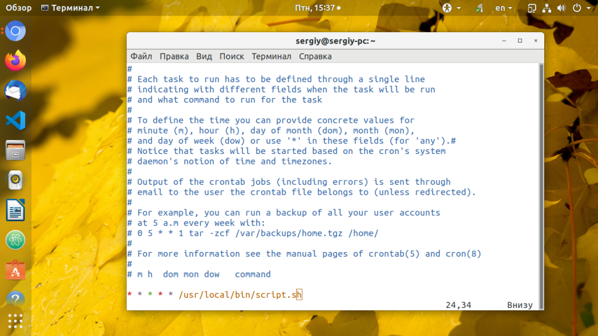
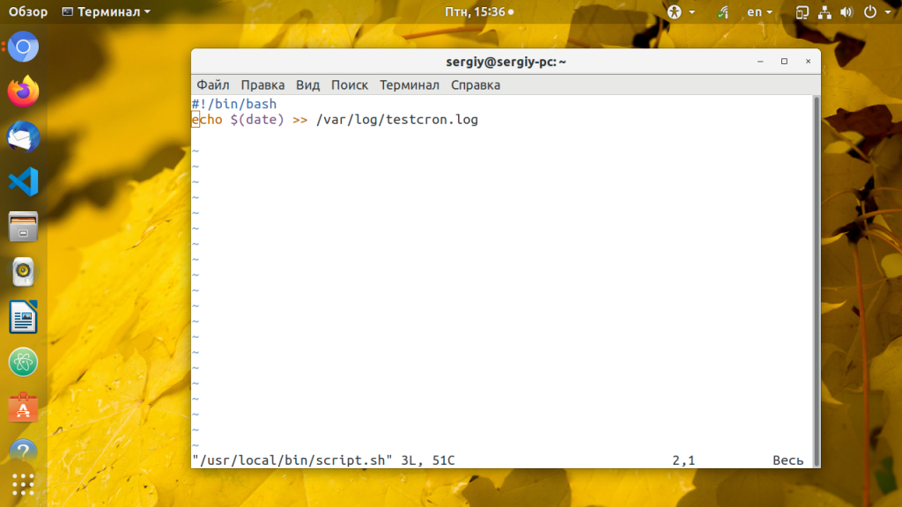
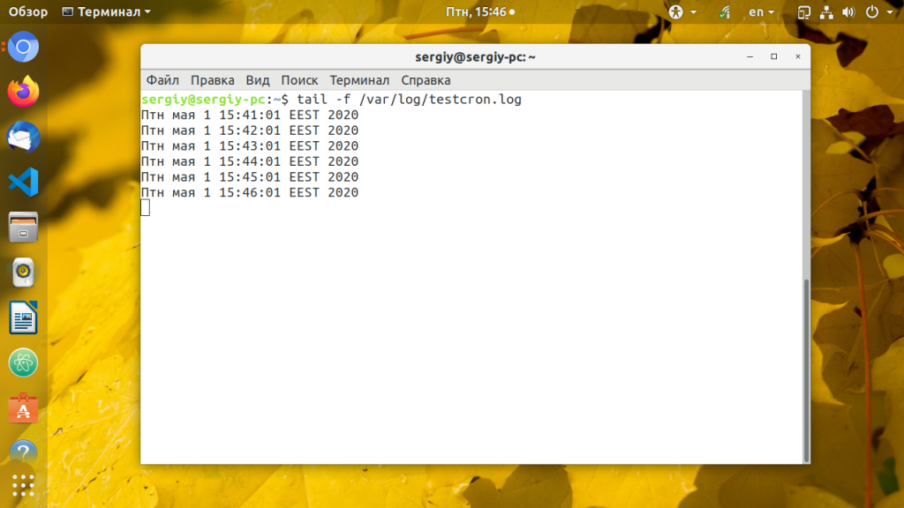
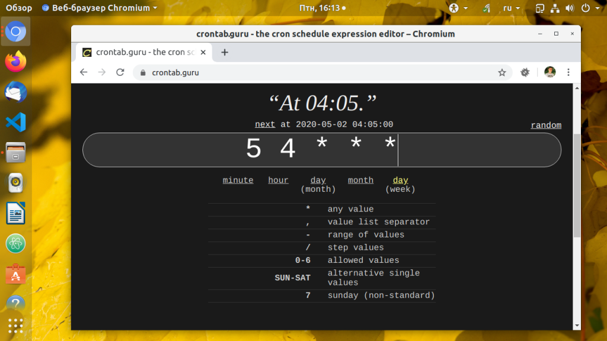
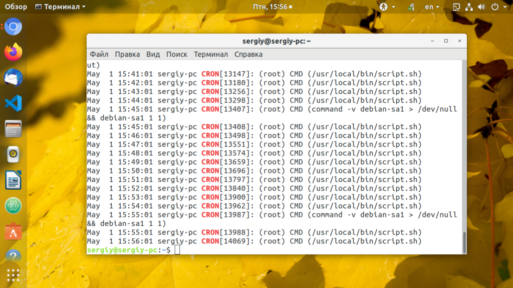

Как добавить команду в Cron
Инструкции Обновлено: 14 мая, 2020 9 admin
При администрировании и настройке серверов очень часто надо настраивать автоматическое выполнение определенных скриптов или программ через равные промежутки времени. Это может быть резервное копирование, отправка отчётов о состоянии сервера или другие тому подобные вещи.
Служба cron - это стандартный планировщик задач в Linux. С помощью него вы можете запланировать выполнение команды или скрипта один или несколько раз, в определенную минуту, час, день, неделю и месяц. В этой статье мы подробно рассмотрим как выполняется настройка Cron в Linux на примере дистрибутива Ubuntu.
Думаю, что начать следует не с настройки, а именно как посмотреть уже настроенные задачи cron. На самом деле задачи хранятся в трёх местах:
Чтобы посмотреть задания cron добавленные текущим пользователем используйте команду crontab и опцию -l:
crontab -l
Все задачи cron разделены по пользователям, и команды из этих задач будут выполнятся от имени того пользователя, для которого они были добавлены. Чтобы посмотреть задачи другого пользователя используйте опцию -u:
sudo crontab -u root -l
А теперь давайте поговорим о том, как добавить команду cron для нужного вам пользователя.
Чтобы добавить задание cron из терминала можно использовать утилиту crontab. Для открытия временного файла с текущими заданиями этого пользователя выполните:
crontab -e
Все запланированные действия будут выполнятся от текущего пользователя, если вы хотите указать другого пользователя используйте опцию -u:
sudo crontab -u имя_пользователя -e
Команда откроет текстовый редактор, где вы сможете добавлять или редактировать задания cron. Будет использован установленный по умолчанию редактор, например, vim:

Каждая задача формируется следующим образом:
минута(0-59) час(0-23) день(1-31) месяц(1-12) день_недели(0-7) /полный/путь/к/команде
Чтобы подставить любое значение используйте звездочку "*". Первые пять параметров характеризуют время выполнения, а последний, это путь к команде или скрипту, который нужно выполнить. Обратите внимание, что значение переменной PATH здесь не действует, поэтому путь надо писать полностью либо объявлять свою переменную PATH в начале файла настройки. Давайте сделаем простой скрипт, который будет выводить в лог дату своего запуска и поможет отладить всё это:
sudo vi /usr/local/bin/script.sh
#!/bin/bash
echo $(date) >> /var/log/testcron.log

Сделайте скрипт исполняемым:
sudo chmod ugo+x /usr/local/bin/script.sh
Самый простой пример как запускать cron каждую минуту. Вместо всех параметров ставим просто звездочку:
* * * * * /usr/local/bin/script.sh

Или только в нулевую минуту, то есть в начале каждого часа или другими словами запуск cron каждый час:
0 * * * * /usr/local/bin/script.sh
Можно указать несколько значений через запятую, для того чтобы определить несколько точек запуска. Например, будем запускать скрипт cron каждые 15 минут:
0,14,29,44 * * * * /usr/local/bin/script.sh
Можно записывать значения через дефис чтобы указывать промежутки точек запуска. Например, для того чтобы запускать скрипт каждую минуту, но только первые 10 минут каждого часа используйте:
0-10 * * * * /usr/local/bin/script.sh
Чтобы чтобы настроить интервал выполнения более тонко можно использовать слеш (/) с помощью этого символа и звездочки можно указать шаг с которым будет выполнятся команда. Например, каждые пять минут:
0/5 * * * * /usr/local/bin/script.sh
Чтобы запустить cron каждые 10 минут используйте:
0/10 * * * * /usr/local/bin/script.sh
А для запуска cron каждые 30 минут:
0/30 * * * * /usr/local/bin/script.sh
Аналогичным образом задаются часы, например, выполнять скрипт только 6:00 и 18:00:
0 6,18 * * * /usr/local/bin/script.sh
А вот запустить cron каждую секунду или раз в 30 секунд не получится. Минимальная единица времени в cron это минута. Но можно создать команду, которая будет запускаться раз в минуту и по 30 секунд спать и затем снова делать:
* * * * * /usr/local/bin/script.sh && sleep 30 && /usr/local/bin/script.sh
Это довольно плохой подход и лучше так не делать. Кроме того, для экономии времени при работе с cron можно использовать специальные слова-маркеры времени. Вот они:
Для подбора правильной комбинации даты можно использовать сервис crontab.guru. Он позволяет в реальном времени посмотреть когда будет выполнено то или иное условие:

Когда настройка cron linux будет завершена, сохраните изменения и закройте файл. Для этого в Nano нажмите Ctrl+O для сохранения и Ctrl+X для закрытия редактора, а в Vim нажмите Esc и наберите :wq. Теперь новые задания Cron будут добавлены и активированы. Посмотреть как выполняется ваш Cron вы можете с помощью скрипта, который я привел выше либо в лог файле. Сервис cron пишет свои логи в стандартный журнал syslog. В Ubuntu они сохраняются в файле /var/log/syslog:
cat /var/log/syslog | grep CRON

Если во время работы возникнут ошибки cron, они тоже будут здесь. Если же вам надо добавить задание Cron из какого либо скрипта, то вы всегда можете поместить свой скрипт в папку /etc/cron.d или /cron/hourly,... чтобы выполнять его когда надо, только не забудьте сделать скрипт исполняемым.
В этой статье мы разобрались как выполняется настройка cron linux на примере Ubuntu. Как видите, все только кажется сложным, но на самом деле просто если разобраться.